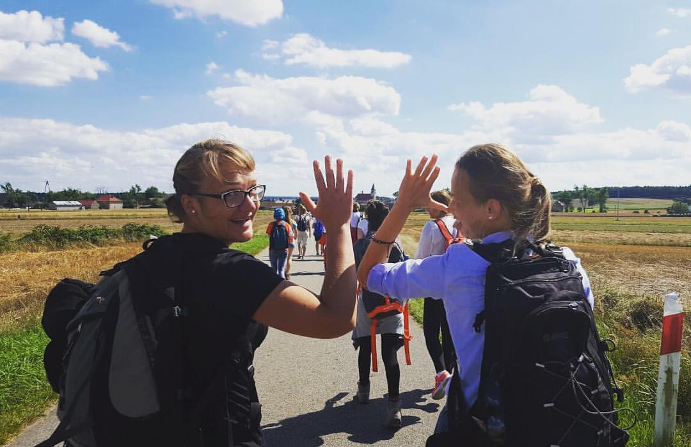
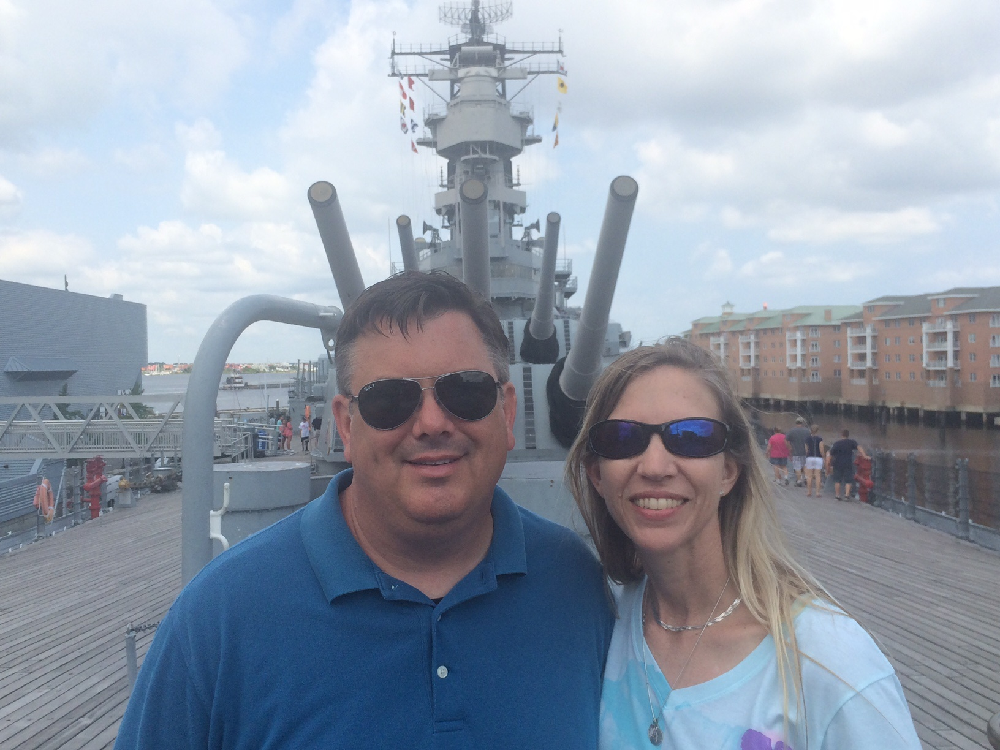

Welcome
- What's your name?
- What is your job or occupation?
- Have you ever worked with drones or spatial data?
- Why have you decided to participate in the workshop?
- If you could spend a week wherever in the world, what would you choose?
Inia Jeziorska
- Geographer and Cartographer
- ASPRS Certified UAS Mapping Scientist
- Research Associate in theCenter for Geospatial Analytics
- likes: mountains, traveling, singing and Pepsi Max
- dislikes: caraway seeds, Imperial units, introducing herself

Tom Zajkowski
- 4 Kids 26-13, same wife
- Holds a Commercial Pilots License
- Attended first "Unmanned Aerial Vehicle" demonstration September 2001
- Still can't stand the humidity in NC
- likes: skiing, hiking, reading
